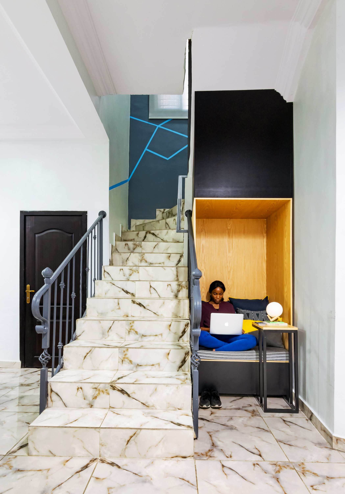
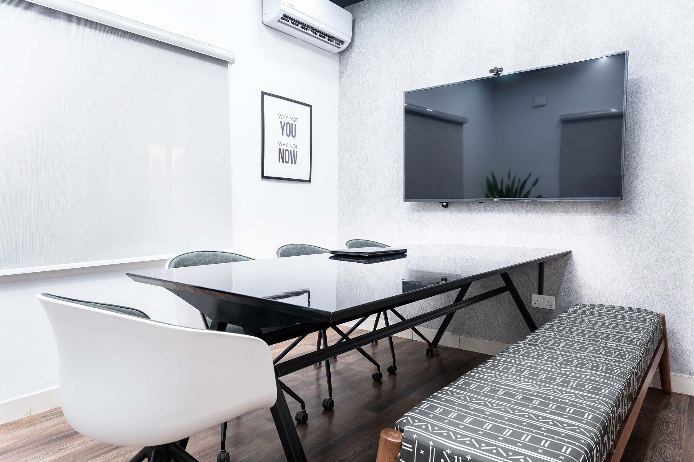

Ibitayo Ayomide Olubode, nee Martins was born in Lagos on the 29th of April 1983 to Mr. Adelola Ibitayo Martins of Lagos Island and Mrs. Adeola Mary Martins, nee Oguntona of Awe, Oyo state. She was the third child born to this beautiful family.
Education
She had her primary school education at Our Lady of Apostles Private School, Yaba then moved on to Queen's College Yaba, Lagos for secondary education. She was admitted into the University of Lagos to study Law and was awarded a Bachelor of Law degree, LLB in 2006, after which she went to the Nigerian Law School in Abuja from 2006 to 2007. She proceeded to Kebbi State for the National Youth Service Corps where she served with the Ministry of Justice (2007 - 2008).
She travelled to the UK for further studies at Swansea University where she obtained a Master of Laws degree in lnternational Commercial and Maritime Law graduating in 2009. Thereafter, she interned with Addie and Co Solicitors in London.
Professional Life
Upon her return to Nigeria in 2010, she was employed by Sefton Fross and worked there briefly as Associate Legal Counsel. It was from here she moved on to Animashaun, Animashaun and Associates where she rose through the ranks to become a Senior Associate, serving as Head of the Company Secretarial team.
Ayomide loved the Law and strived very hard to be great at it. Her effort paid off. She practiced in the Corporate/Commercial Law departments as a Solicitor and Legal Advisor advising clients on diverse matters from intellectual property to commercial, corporate law and Corporate Governance. She advised business start-ups, as well as going concern companies on regulatory compliance, corporate due diligence, corporate restructuring and commercial transactions.
Her experience extended to advising clients on Nigerian law and policy affecting the operation of businesses, the establishment of foreign businesses, foreign investments in Nigeria, company/business laws and regulations and provision of corporate governance and compliance advice to clients in connection with local and international transactions.
She was in charge of company secretarial matters and carried out these functions for a number of clients, both private and public under the auspices of Ani Secretaries Ltd, a subsidiary of the firm set up as a vehicle for taking on the company secretarial concerns of the firm's clients. A list of clients she served as company secretary to include The La Caesura Company Plc, Jotna Nigeria Limited, Contech Nigeria Limited, Sarsoli Industrial Company Limited, Fleming Limited, Ajani Farms Limited, St. Francis Wellness Hospital Limited, Magenta Residential Limited, Metro Health Limited, Tideway Capital Limited and Esowofina Limited.
Her membership of professional bodies included the Nigerian Bar Association, International Bar Association, Chartered Institute of Arbitrators, Society for Corporate Governance and the Association of Professional Negotiators and Mediators.
Service to God and Humanity
Ayomide was very passionate about God and served as a Sunday school teacher at the Cathederal Church of Christ where she attended Sunday school as a little girl. She was an active member of the Cathedral Youth Fellowship.
Through her years in University, she was very actively involved in The Sovereign Army Fellowship and the Unilag Chapter of the Christian Lawyers’ Fellowship of Nigeria (CLASFON)
During her mandatory youth service in Kebbi, Ayomide volunteered her time to the Legal Aid Council, Millennium Development Goals Awareness Campaign Group and Action Aid. More recently, she was a volunteer on the Queen's College Old Girls Association Mentoring Committee where she mentored a group of students.
She was very involved and committed to the 12 lamps mentorship programme for current QC students and devoted her time to organizing and participating in mentoring events.
Family Life
Ayomide met Temitayo Olubode in 2010. They were married two years later, and the marriage is blessed with two lovely boys – Oyindamola and Ifeayo. She spoke French fluently and loved to dance, cook, paint and make crafts. She was a super mum and was totally dedicated to her family; she would take the boys to swimming and Spanish lessons on Saturdays and always made time to look over their school work. In spite of their ages at the time of her passing, she incorporated them into activities around the house, like loading clothes in the washing machine, measuring Dettol for bath water and putting bottles of water in the fridge.
She was a mother and sister to all who knew her and was loved by many. She was admired as a highly intelligent, disciplined, strong woman who continuously sought to make a positive impact wherever she was. She is sorely missed and we take solace knowing that she rests in the bosom of our LORD.